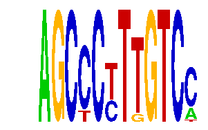

family_14 |
|---|
|  |
| Download PWM |
| Download instances (motifs) |
| Show motif distribution |
Query_ID | Query_Consensus | Subject_Name | Source_DB | Subject_ID | Length | Orientation | Offset | Divergence | Overlap | Subject_Consensus |
|---|---|---|---|---|---|---|---|---|---|---|
| family_14 | AGCCCTTTGTCC | PAX5 | HOCOMOCO | PAX5_HUMAN.H10MO.S | 8 | reverse-complement | -4 | 0.638 | 4 | GGCTGAGN |
Sequence | Start_position (from start) | Start_position (from end) | Average conservation | Best conservation score | Instance_with_best_CS | Best_Z-score | Instance_with_best_ZS | Strand |
|---|---|---|---|---|---|---|---|---|
| chr7:3297200-3299400 | 491 | 503 | 0.00633333 | 0.05 | AGCCCYTTGTC. | 29.683191 | AGCCCYTTGTCM | -1 |
| chr13:43969500-43971500 | 1328 | 1340 | 0.00216667 | 0.007 | AGCCCYTKGTCC | 29.683191 | AGCCCYTTGTCM | 1 |
| chr13:44259818-44261300 | 454 | 466 | 0.00216667 | 0.015 | AGCCCYTTGTC. | 20.719866 | AGCCCYTKGTCC | 1 |
| chr4:102062597-102063900 | 761 | 773 | 0.0263333 | 0.059 | AGCYCYTTGTCC | 29.683191 | AGCYCYTTGTCC | -1 |
| chr12:15599800-15601902 | 1719 | 1731 | 0.00741667 | 0.032 | AGCCCYTTGTC. | 29.683191 | AGCCCYTTGTCM | 1 |
| chr5:116900340-116901340 | 811 | 823 | 0.00258333 | 0.009 | AGCCCYTTGTCM | 20.719866 | AGCCCYTKGTCC | 1 |
| chr7:82538600-82540800 | 1610 | 1622 | 0.02725 | 0.054 | AGCCCYTTGTC. | 20.719866 | AGCCCYTKGTCC | -1 |
| chr9:89842300-89844123 | 1759 | 1771 | 0.01575 | 0.037 | AGCCCYTKGTCC | 20.719866 | AGCCCYTKGTCC | 1 |
| chr5:149062900-149066000 | 669 | 681 | 0.000666667 | 0.002 | AGCCCYTTGTC. | 18.433475 | AGCCCYTTGTC. | -1 |
| chr1:136238100-136239343 | 603 | 615 | 8.33333e-05 | 0.001 | AGCCCYTTGTC. | 29.683191 | AGCYCYTTGTCC | 1 |
| chr11:60531900-60533700 | 181 | 193 | 0.999583 | 1 | AGCCCYTKGTCC | 20.719866 | AGCCCYTKGTCC | 1 |
| chr4:147342800-147344800 | 1817 | 1829 | 0.0383333 | 0.107 | AGCYCYTTGTCC | 29.683191 | AGCYCYTTGTCC | 1 |
| chr2:17460500-17461948 | 340 | 352 | 0 | 0 | AGCCCYTTGTC. | 20.719866 | AGCCCYTKGTCC | 1 |
| chr8:124668100-124670200 | 1966 | 1978 | 0.0685 | 0.082 | AGCCCYTTGTCM | 18.433475 | AGCCCYTTGTC. | 1 |
| chr1:40860200-40863300 | 362 | 374 | 0.211083 | 0.225 | AGCCCYTTGTC. | 29.683191 | AGCCCYTTGTCM | -1 |
| chr9:115293000-115294061 | 243 | 255 | 0.00583333 | 0.016 | AGCCCYTTGTCM | 20.719866 | AGCCCYTKGTCC | 1 |
| chr10:92753927-92755800 | 1614 | 1626 | 0.00733333 | 0.013 | AGCYCYTTGTCC | 29.683191 | AGCYCYTTGTCC | 1 |
| chr2:59797544-59799200 | 994 | 1006 | 0.00825 | 0.018 | AGCYCYTTGTCC | 29.683191 | AGCCCYTTGTCM | 1 |
| chr9:110271600-110273100 | 216 | 228 | 0.0216667 | 0.06 | AGCCCYTTGTCM | 20.719866 | AGCCCYTKGTCC | 1 |